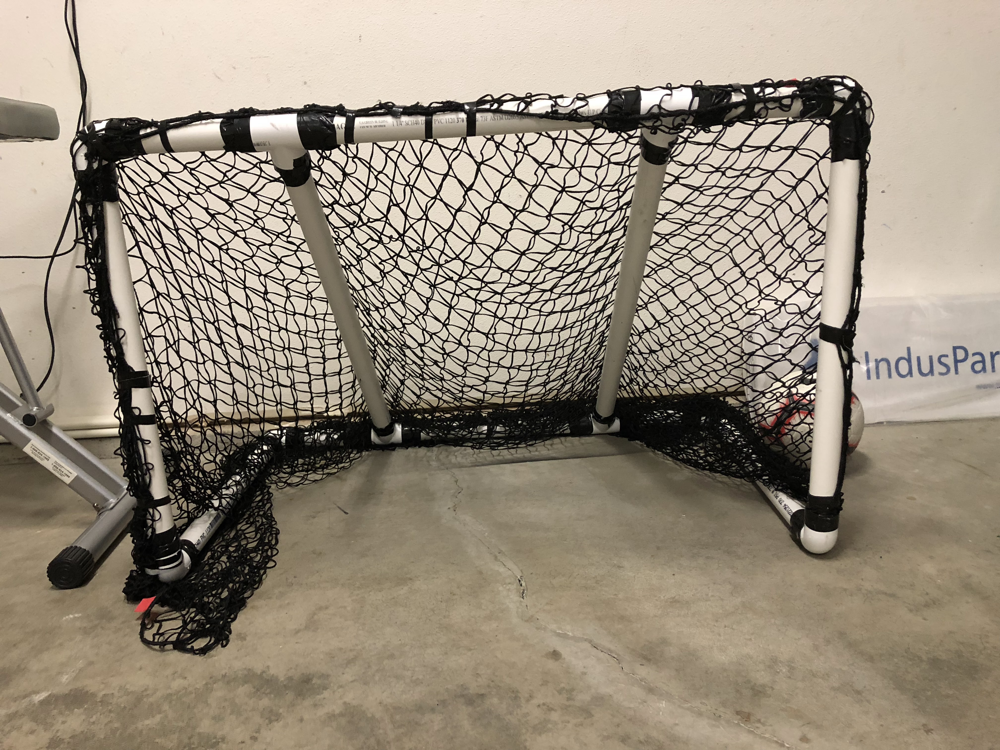

The problem/motivation
I wanted my own soccer goal to practice with, so instead of buying one, I decided to build it myself out of PVC pipe and netting.
How it works
Before cutting anything, I did the math to figure out how many pipes I'd need and what lengths to cut them to, based on the size I wanted the goal frame to be. Once I had the measurements figured out, I got the netting and the pipe, then put the frame together.
Process
- Calculated how many pipes were needed and what lengths to cut them to.
- Got the netting for the goal.
- Cut the pipes to the measured lengths.
- Connected the pipes into the goal frame.
- Tied the net onto the frame.
Results
A fully homemade PVC-pipe soccer goal, built from scratch after working out the pipe measurements myself instead of following a kit or instructions.